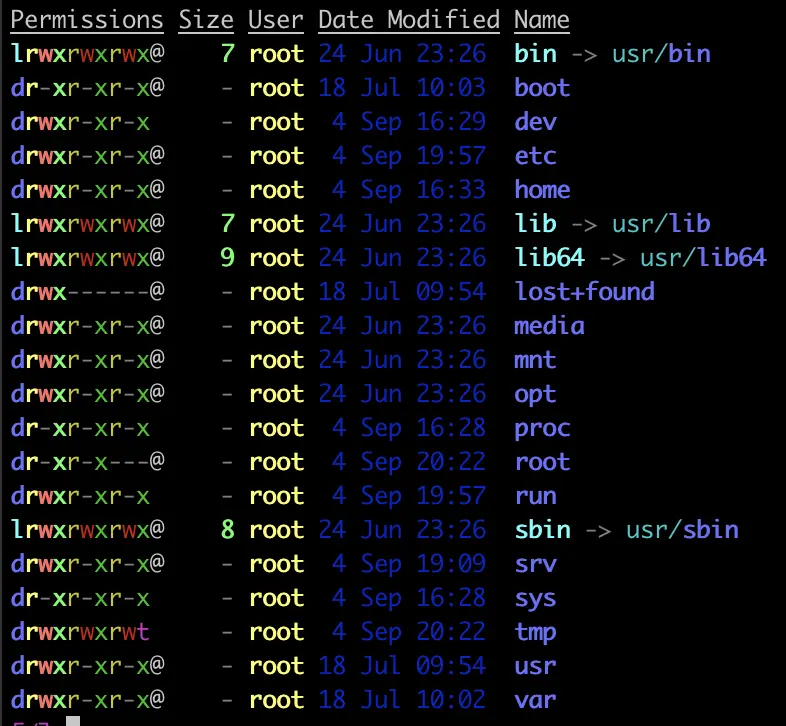
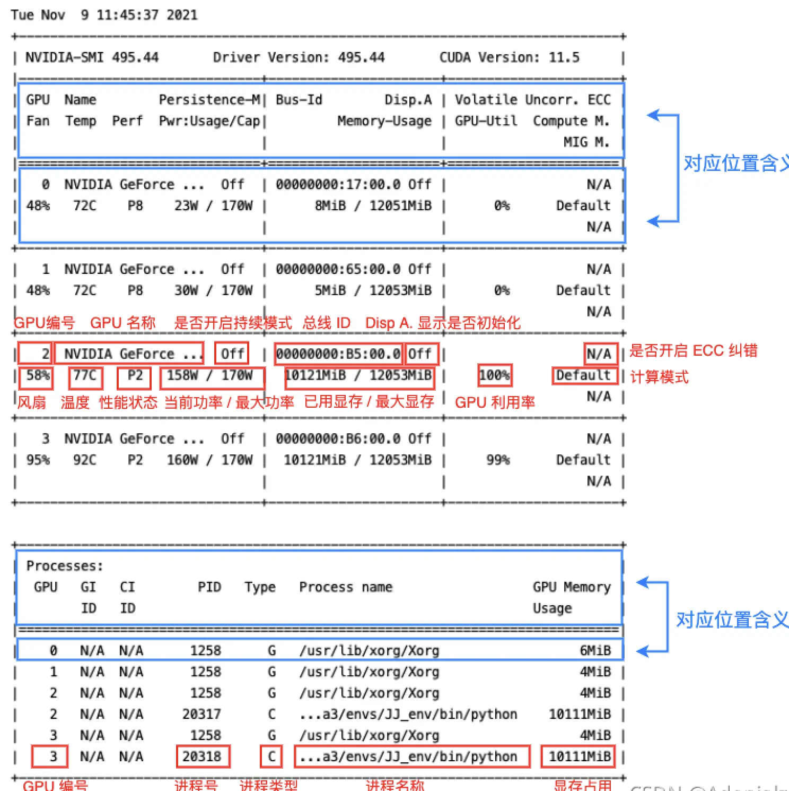

Shell
AI 导读一分钟导读，先掌握全文主干。
核心观点
- Shell 语法技巧与文本处理片段（grep/awk/sed）
- 安全写法：变量引号、set -eu 等
- 常见需求代码段可直接抄
关键结论与取舍
- 脚本先加 set -eu 与引号，能挡掉大半事故
- 文本处理优先 awk/sed，别用循环硬啃
本页是日常 Shell 效率笔记：Modern Unix 工具链 、并发/SSH/网络/系统命令片段、示例脚本与 .ssh/config 多密钥管理；文末「Shell 工具链 2025-2026」汇总了 Ghostty/Yazi/atuin 等新生态，现代工具选型直接看那里的对照表。
升级替换系统命令-modern-unix
- bat 代替 cat，bat 相比 cat 增加了行号和颜色高亮 👍
- duf 代替 df
- eza 代替 ls（exa 已停止维护，继任者为 eza）
- dust 代替 du
- procs 代替 ps
- difftastic（difft）替代 diff
- McFly（https://github.com/cantino/mcfly ）
- zoxide 代替 cd，可能不用启动 z
- tldr 替代 man，tldr-github pip install tldr
- ctrl+r 搜索历史命令
# 或者ctrl+r
mcfly search并发启动命令
for var in {0..2}
do
#用{}把循环体括起来,后加一个&符号,代表每次循环都把命令放入后台运行
#一旦放入后台,{}里的命令就在当前 shell 的子进程里执行,与主流程并发
{
echo ${var}
}&
done
wait
#wait命令的意思是，等待（wait命令）上面的命令（放入后台的）都执行完毕了再往下执行常用源目录
- /etc/yum.repos.d
systemd新时代linux服务管理软件，就是平时使用(systemctl start stop enable disable status) xxx
- systemd 是一个服务管理器，它使管理服务器变得更加容易。
- 对于支持 systemd 的软件，安装的时候，它会自动在 /usr/lib/systemd/system 目录添加一个配置文件
- /lib -> /usr/lib 通常路径被软链接

curl 带用户名密码的 POST 提交
curl -i -X POST \
http://localhost:4080/api/test/_doc \
-u user:pwd \
-H 'Content-Type: application/json' \
-d '{"name":"中文12344", "value":"https://abc.iste/"}'
curl -X DELETE \
http://127.0.0.1:4080/api/index/xxx/ \
-u user:pwd
# 获取本机外网ip
curl ifconfig.me查看哪个命令在哪个包中
# dnf是yum的继承者,更好用
# 查找提供指定内容的软件包
dnf provides '*/chsh'
# 以 Fedora 为基准的安装包如下
dnf install -y util-linux-user
# 搜索一定要加引号
dnf search 'keyword'
# 修改默认的shell
chsh [option] user
# 带调试查看ssh登陆过程,用于排查卡住/耗时
ssh -vvv xxxx
# 后来ssh -v 登录查看了下日志，发现一直卡在debug1: SSH2_MSG_KEXINIT sent。直到最后链接失败。
# 网上查了很多，发现是因为mtu设置的数值太大。网络->高级->手动(平时是自动)->指定1500.ssh/config管理多个ssh密钥
-
~/.ssh/config 如果不存在，则创建。
... # Host可以自定义 Host github2 # github.com这个是真实远程服务器,不能修改 # id_ecdsa.pub内容要在github相应帐户添加为ssh密钥 HostName github.com PreferredAuthentications publickey # 指明用哪个文件 IdentityFile ~/.ssh/id_ecdsa ...- Host 的定义可以有多组，用指定哪个 ssh 密钥对应哪个 HostName/Host
- 一般不同域名不同 ssh 密钥不用配置 config，能自动查找对应
-
测试 config
#github2为config文件中的Host值 ssh -T git@github2 # 查看ssh登陆详情 ssh -vvvT git@github2- 如果 github.com 的帐户 username 设置了 id_ecdsa.pub
- 则会回包 Hi username! You've successfully authenticated, but GitHub does not provide shell access
-
修改远程仓库 url
#git@github.com:username/reposname.git==>git@github2:username/reposname.git #github2为config文件中的Host值,表明reposname要采用id_ecdsa密钥 git clone git@github2:username/reposname.git -
本地 reposename 配置 .git/config
cd reposname git config user.name 'username' git config user.email 'username@xx.com'- github 根据配置文件的 user.email 来获取 github 帐号显示 author 信息
在连接远程SSH服务的时候，经常会发生长时间后的断线，或者无响应（无法再键盘输入)
- 客户端定时发送心跳，在客户端
~/.ssh/config里加配置
vim config
# 即每隔30秒，向服务器发出一次心跳
ServerAliveInterval 30
# 若超过100次请求，都没有发送成功，则会主动断开与服务器端的连接。
ServerAliveCountMax 100- 服务器端定时向客户端发送心跳，修改服务器端 ssh 配置 /etc/ssh/sshd_config
vim /etc/ssh/sshd_config
# 表示每隔多少秒，服务器端向客户端发送心跳
ClientAliveInterval 30
# 表示上述多少次心跳无响应之后，会认为Client已经断开
ClientAliveCountMax 6xargs(命令行参数)和|(标准输入)
#find标准输出为每行一个文件名
#直接通过管道转为grep的标准输入,则grep搜索标准输入包括protobuf的
#输出结果:文件名以.mod结束且包括protobuf
find . -name "*.mod" | grep protobuf
#管道转为xargs的标准输入,
#xargs把标准输入转化为grep的参数
#grep指定的文件名里内容包括protobuf的
#输出结果:文件名以.mod结束且文件内容包括protobuf
find . -name "*.mod" | xargs grep protobuf
# 搜索名字叫html目录
find . -type d -name 'html'- 管道（|）的作用是将前面命令的标准输出作为后面命令的标准输入
- xargs 将标准输入转成各种格式化的参数
常用命令
set -v 回显命令，但不替换变量值
set -x 回显命令，并展开替换变量值
# 用双引号处理带空格的文件
cp "带空格的文件" newfile
ls -l | grep "^-" | wc -l 当前目录下文件总数
# linux网络共享网盘nfs，/etc/exports文件增加一个共享目录
#产生ssh密钥对,注意-C大写,保存id_rsa文件名,ssh会默认读取,否则就要明确指出
#-b：指定密钥长度；-C：添加注释；-f：指定用来保存密钥的文件名；-t：指定要创建的密钥类型。
#现在很多地方都不支持rsa,建议采用ed25519/ecdsa
# -t [dsa | ecdsa | ecdsa-sk | ed25519 | ed25519-sk | rsa]
# 注意:命令里的空格必须是普通半角空格;若从网页复制报「不识别参数」,
# 先检查是否混入了不换行空格(U+00A0),替换成普通空格即可
ssh-keygen -t rsa -C "xxx@aliyun.com" -f id_rsa
ssh-keygen -t ed25519 -C "xxx@aliyun.com" -f id_ed25519
# 显示正在使用的shell
echo $SHELL
# 快速切换目录, vim .bashrc/.zshrc source .bashrc/.zshrc
export CDPATH=.:~:/xxx/
#获取历史命令
#zsh
cat $HOME/.zsh_history
#bsh
cat $HOME/.bash_history
# 查看磁盘占用情况
df -h
#查看当前一级目录文件大小
du -h --max-depth=1
# 清空./var/journalctl日志
journalctl --vacuum-size=10M
# ls人性化阅读
ls -lh
# 复制到粘贴板
#windows
clip < ~/.ssh/id_ed25519.pub
#mac
pbcopy < ~/.ssh/id_ed25519.pub
#linux
xclip -sel clip < ~/.ssh/id_ed25519.pub
# 获取脚本所在目录
dirname $0
cd `dirname $0`
pwd
# 获取home目录
echo $HOME
# 当前时间、系统已经运行了多长时间、目前有多少登陆用户、系统在过去的1分钟、5分钟和15分钟内的平均负载。
uptime
# 解决ssh超级慢(去除服务端利用dns反查客户端)
vi /etc/ssh/sshd_config
UseDNS no
GSSAPIAuthentication no
# 列出所有监听tcp端口程序
netstat -ltpn
#查看所有服务监听端口
netstat -a
# 监听tcp指定端口
tcpdump tcp port xxx
#查看网卡流量:每1秒 显示 1次 显示 10次
sar -n DEV 1 10
# 查看命令执行情况(调试时与 -x 配合)
set -v
#防火墙:
#查看是否打开端口:
firewall-cmd --list-all
#添加端口:
firewall-cmd --permanent --add-port=3000/tcp
#批量增加端口:
firewall-cmd --permanent --zone=public --add-port=7000-8000/tcp
#移除端口:
firewall-cmd --permanent --remove-port=7780/tcp
#重新加载规则生效
firewall-cmd --reload
#查找前20名占用内存较大:
ps aux | head -1; ps aux | grep -v PID | sort -rn -k4 | head -20
# 建立软连接
ln -s 真实存在目录 软链接积累
# 使用-j参数 不处理压缩文件中原来目录路径
zip -qj file.zip /xxx/xx/xx示例脚本
- linux 普通用户实现 sudo 免密
vim /etc/sudoers.d
增加一个文件，添加以下内容
username ALL=(ALL) NOPASSWD:ALL- 利用 git 部署更新脚本
#!/usr/bin/env bash
cd ${gitdir}
# 批量杀死监控进程 shell脚本或专用管理程序
ps -ef|grep xxx | grep -v grep | awk '{print $2}' | xargs kill -9
# 批量杀死目标进程
ps -ef|grep yyy | grep -v grep | awk '{print $2}' | xargs kill -9
# 拉取最新程序
git pull
# 跑起监控进程
nohup ./xxx.sh >/dev/null 2>&1 &- 监控脚本
#!/usr/bin/env bash
while true
do
# 查看目标进程还在不在
procnum=` ps -ef|grep "yyy$"|grep -v grep|wc -l`
if [ $procnum -eq 0 ]; then
cd ${basedir}
nohup ./yyy >/dev/null 2>&1 &
fi
# 延时30秒
sleep 30
done- 编译脚本
#!/usr/bin/env bash
# 批量杀死目标进程
ps -ef|grep yyy | grep -v grep | awk '{print $2}' | xargs kill -9
hash=`git rev-parse --short HEAD`
rc=`date "+%Y-%m-%d_%H:%M:%S"`
target=yyy
go build -ldflags "-s -w -X main.GitHash=${hash} -X main.CompileTime=${rc}" -tags=jsoniter -o ${target} ${target}.go
chmod a+x ${target}
rundir=${target}_run
rm -rf ${rundir}
mkdir ${rundir}
mv ${target} ${rundir}
cp -r conf ${rundir}/
nohup ./${target} >/dev/null 2>&1 &
exit- 设置北京时间
sudo timedatectl set-timezone Asia/Shanghai常见包管理
- apt = apt-get、apt-cache 和 apt-config 中最常用命令选项的集合。
- dnf 是 yum 的升级版
显卡
sudo lshw -numeric -C display # 显示显卡信息
lspci | grep -i vga # 或直接查 PCI 设备中的显卡
权限错误
# Permissions 0644 for '/root/.ssh/id_ecdsa' are too open
# 降低权限
chmod 0600 ~/.ssh/id_ecdsaShell 工具链 2025-2026：终端复兴与 AI 时代（2024-2026 更新）
2025-2026 生态进展
- 终端模拟器复兴 ：Ghostty（Zig 编写、GPU 加速渲染、内置 100+ 主题）2024-12 发布 1.0，2026-06 已迭代至 1.3.1，成为 macOS/Linux 新装机终端的热门选择；Warp、Zed 终端（Rust）继续分流。
- Yazi 成为新一代终端文件管理器 ：基于 Rust + Tokio，异步 I/O、图片预览、插件系统，实际上取代 ranger/lf 的生态位置。
- 系统信息工具换血 ：
fastfetch取代已停止维护的 neofetch；duf让磁盘占用一目了然。 - 复用器与 AI 场景 ：
zellij（Rust 终端复用器，session 管理）持续流行；面向 AI 编码代理的cmux、tmux集成成为新话题。 - Git 终端界面 ：
lazygit/lazydocker几乎成为终端 Git 操作标配。 - 命令历史与工具链 ：
atuin（模糊检索 + 加密同步的命令历史）与mise（统一版本管理器）在 2025-2026 快速普及。 - AI 代理重塑工作流 ：Claude Code 等代理把 rg/fd/gh/jq 当成「手」直接用——现代 Shell 工具链意外成为 AI 编码时代的底层基建，
ripgrep与fd的使用频次暴涨。
Modern Unix 工具链
| 现代工具 | 替代 | 说明 |
|---|---|---|
bat | cat | 语法高亮、行号、Git 集成 |
eza | ls | exa 的继任者，Git 集成 |
zoxide | cd | 智能目录跳转，频率排序 |
ripgrep (rg) | grep | 极速搜索，尊重 .gitignore |
fd | find | 友好的文件查找 |
delta | diff | 美化 Git diff 输出 |
dust | du | 磁盘使用可视化 |
procs | ps | 彩色进程列表 |
btop | top/htop | 系统监控可视化 |
jq / yq | - | JSON/YAML 处理 |
fzf | - | 模糊查找器 |
starship | - | 跨 shell 提示符 |
yazi | ranger/lf | Rust 终端文件管理器（2025 起热门） |
fastfetch | neofetch | 系统信息，聚焦性能 |
现代 Shell
- Nushell（nu） ：结构化数据 Shell，管道传递表格数据而非纯文本，2024-2026 持续高活跃度更新。
# Nushell 示例 ls | where size > 10MB | sort-by size | select name size open data.json | get users | where age > 18 | count - Fish Shell ：开箱即用的自动补全和语法高亮，4.x 系列持续迭代。
- Zsh + Oh My Zsh ：最流行的 shell 配置框架；配合 zsh-autosuggestions、zsh-syntax-highlighting 效果更佳。